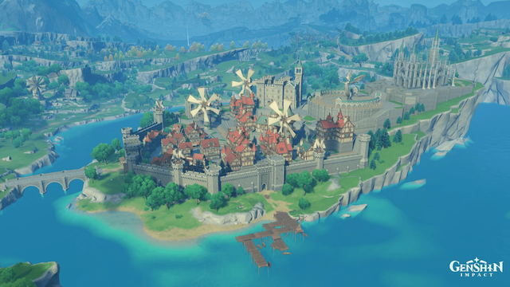
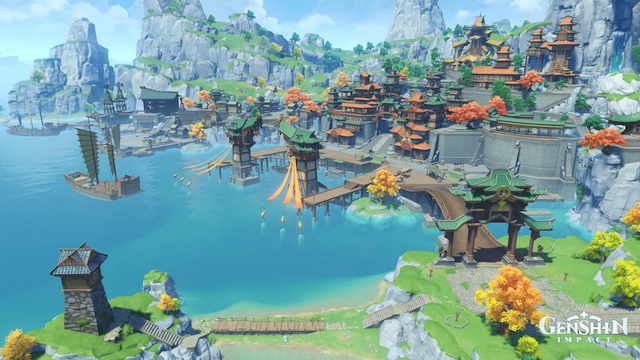

The Nations of Tevyat
The following are the current nations in Genshin Impact and are numbered by the release and/or placement in storyline adventure:
- Mondstadt
- Liyue
- Inazuma
- Sumeru
Mondstadt
Out of seven nations (4 currently released), Mondstadt is the first nation we enter as the traveler, looking for our lost sibling. We meet characters like Amber, Kaeya, Lisa, and more to add them to our starter team. We also start our adventure to meet the archon of the nation (who does not rule over it to perserve the concept of freedom). We meet Venti, the anemo archon (can be considered the god of freedom), and fight a dragon!
Liyue
Liyue is the second nation we enter as the traveler, although it was released around similiar times as Mondstadt. We meet characters like Xiao, Ningguang, Xiangling, and others on our journey and create frienships along the way. We continue our exploration and search for our sibling, meet new monsters, and challenges. Here, we meet the geo archon (can also be considered the god of contracts), and fight off sea gods who attack Liyue Harbor!
Inazuma and Sumeru
Information regarding these nations will be updated.